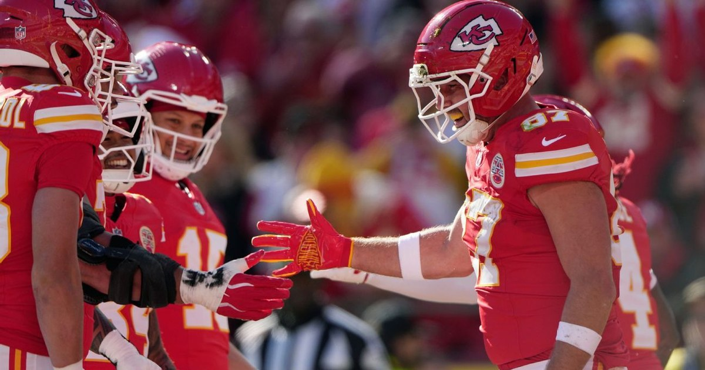

Travis Kelce just passed Rob Gronkowski — third-most touchdowns ever by a tight end
An eight-yard touchdown from Patrick Mahomes moved Travis Kelce past Rob Gronkowski into third place all-time among tight ends — and he added a second score before halftime in the Chiefs' 34-7 win over Arizona.

Disclosure: this post contains affiliate links. I earn a commission on qualifying purchases.
The pass
It took one drive. On the Chiefs' opening possession against the Arizona Cardinals, Patrick Mahomes found Travis Kelce for an eight-yard touchdown — the 109th total touchdown of Kelce's career, and the one that moved him past Rob Gronkowski into third place all-time among tight ends.
Gronkowski finished his career with 108 total touchdowns. Kelce entered Sunday tied with him, and by the end of the first quarter he was alone in third. Only two tight ends in NFL history sit ahead of him now: Tony Gonzalez and Antonio Gates.
Kelce did not stop there. He caught a 22-yard touchdown from Mahomes in the second quarter — his 110th career score — on his way to six catches for 74 yards and two touchdowns in a 34-7 Chiefs win that moved Kansas City to 8-2.
A very short list
The second touchdown put Kelce in company that has nothing to do with tight ends. He became only the fourth player in NFL history to score two touchdowns in a half at age 37 or older, joining Jim Thorpe, Steve Young, and Jerry Rice.
It was also his first multi-touchdown game since Week 11 of the 2022 season against the Chargers — a reminder that the 37-year-old is still finding new lines for the resume in his 14th season. Sunday was his 100th regular-season game at Arrowhead Stadium, making him just the fourth player in franchise history to reach that mark since the stadium opened in 1972.
The gap to the top of the list is now small. Kelce needs five more touchdowns to tie Gonzalez, and eight to tie Gates, with seven regular-season games left on the schedule.
The Gronk comparison
The numbers behind the pass tell the story of two different kinds of careers. Kelce entered Sunday with 108 touchdowns — 104 receiving, three rushing, one return — across 226 games and 14 seasons. Gronkowski reached the same total in 165 games over 11 seasons, with 107 receiving scores and one rushing.
Gronkowski, a four-time Super Bowl champion, will be eligible for the Hall of Fame ballot for the first time in 2027. Kelce, a three-time Super Bowl champion, will join him there eventually. The list they are climbing now is the one that decides how history orders them.
A season of climbing
This is not Kelce's first record of the fall. He entered Week 11 leading the Chiefs with 512 receiving yards, and earlier this season he and Mahomes passed Gates and Philip Rivers for the most yards generated by a tight end and quarterback duo in NFL history. In Week 2 he broke Marshall Faulk's career record for yards after the catch.
Kelce ranks first among tight ends in NFL history in receiving yards including playoffs. The touchdowns were the one list where Gronkowski still stood in front of him. Not anymore.
Gear up: Fanatics